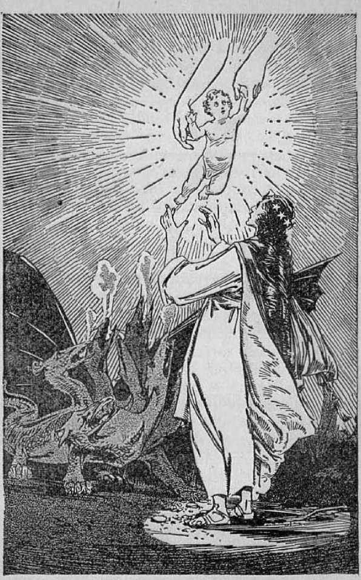

explained in
Seven Bible Treatises
by
J. F. RUTHERFORD
•>-------------------------------------------------------(.
Page
3 Signs-in Heaven
12 Divine Prophecy
21 Jehovah's Great Prophet
29 Prophets Foretell Redemption
37 Resurrection
46 Resurrection of Jesus
55 The Kingdom
■>-------------------------------------------------<•
Reading Judge Rutherford’s set of books explaining the Bible will give more real information and satisfaction than a ten-year course in any theological college.
.)--
CorvmonTEn 1932 and Published by
WATCH TOWER BIBLE AND TRACT SOCIETY International Bible Students Association Brooklyn, N. Y.f U.S.A,
Bhanch Offices: London, Magdeburg, Paris, 'I’ormdn, Ml i n tiifield, Cape Town. Heino, Copenhagen, HI..। hliidni. mid other cities.
Abide in U.S.A.
JEHOVAH caused the book of Revelation to be written in sign or symbolic language, which was one means of concealing its meaning until God’s duo time for it to be understood. The time for understanding has now come, and this is indicated by the words in the eleventh chapter, which read: ‘Thou hast taken thy power and reigned; and the nations were angry, and God’s wrath is come.’ In 1914 the events came to pass marking the beginning of the fulfilment of this prophecy, and which was more completely fulfilled in 1.918.
If you will read the twelfth chapter of Revelation as it appears in your Bible, you will more fully appreciate what is now being said. It opens with the statement, to wit: ‘"And there appeared a great wonder in heaven; a woman clothed with the sun, and the moon wider her feet, and upon her head a crown of twelve stars; and she being with child cried, travailing in birth, and pained to be delivered. And there appeared another wonder in heaven; and behold a great red dragon, having seven heads and ten horns, and seven crowns upon his heads.”
The two wonders or signs here mentioned are two great organizations, to wit, Jehovah God’s organization, pictured by the woman that gives birth to the man child; and Satan’s organization, pictured under the symbol of a great red dragon. The statement that these signs appeared in heaven means that those persons on earth who are earnestly and faithfully serving God arc permitted to have an understanding of these things pertaining to the heavenly kingdom and of which this prophecy is a part.
The great truth that Ims held the attention of Christians for nineteen centuries has been the second coming of Christ and the setting up of bis kingdom. That great event is pictured in this part of the Revelation by the pure woman, representing God's organization, and the giving birth to the man child, which is symbolic of the kingdom, which kingdom shall rule all the nations of the earth. God’s great organization embraces I Im righteous heavenly creatures, ami also those in the earth who are wholly devoted to God. Note that the woman, which is God’s organization, is clothed and shod with the light of the sun, moon and stars. As those heavenly bodies give light to man on earth, even so the light of God shines upon those who love and serve him; and this assures (hem of an understanding of divine prophecy, whim it is fulfilled.
Jesus was given the right, to the kingdom 1900 years ago; but, as stated to him by Jehovah at
The birth of God’s kingdom, in 1914 Page 6
that time, he must wait until God’s due time for him to begin his reign. The cries of the woman mentioned in this prophecy picture the prayers and supplications of those in harmony with God that his kingdom, should be established on earth. The fact that God long ago promised that he would bring forth a “seed” that would rule the world is conclusive proof that in his due time that seed must be born. The birth means the beginning of the kingdom of Christ, pictured by the birth of the man child. The statement of the prophecy is: ‘The child was born and was caught up uiitn God and unto his throne.’ Thus is shown that Jehovah acknowledges as his the kingdom which is under Christ and which shall rule all the nations.
Satan is also named the “old dragon”. That name signifies “devourer”. He has attempted to devour every one who honestly serves God. He has a mighty organization composed of invisible creatures called principalities, powers and wicked angels; and the nations of this world are under his influence and control, and therefore a part of Ids organization. When Jesus was on earth Satan repeatedly tried to kill him. At all times Satan has opposed God's kingdom under Christ, and his agents or representatives have likewise opposed. Sa tu ri’s entire organization is against God and his kingdom, and hence his organization is pictured under the symbol of a great red or bloody dragon. The
Scriptures show that Satan would he watching the time that the kingdom under Christ would begin to function, in order that he might destroy it. Therefore the prophecy of Revelation says that Satan the Dragon stood before the woman to devour the man child.
The 110th Psalm and other prophecies show that when God would send forth Christ to .begin his reign, the nations would become angry, because Satan would stir up a groat world war. These prophecies, together with the facts that came to pass, fixed the time as 1914, with the beginning of the World War. Up to that time Satan had his place in the realms of heaven, but with the beginning of Christ's kingdom he must be ousted from heaven. A great war in heaven followed. In proof of this it is written, in Revelation 12:7: "And there was war in heaven; Michael and his angels fought against the dragon ; and the dragon fought and his angels.” In that fight the Devil was cast out of heaven. The two great signs in heaven, therefore, picture the two mighty organizations gathering into action for war, and the result of that war.
To be sure, there was much wickedness and crime before the World War of 1914. But since that time crime has been steadily on the increase. You have wondered why this is so, and now I am going to show you the Scriptural reason. The war in heaven between Christ and Satan resulted in Satan’s and his angels’ being cast down from heaven to the earth; and since then he has been confining his operations to the vicinity of the earth. Even though Satan is invisible to human eyes, his works are seen by all men. He is the very embodiment of wickedness, and his purpose is to plunge all creation into wickedness. It is to be expected, therefore, that Satan the Devil would cause as much trouble in earth as possible. In proof of this, Revelation 12:12 says: “Woe to the inhabiters of the earth, and of the sea! for the devil is come down unto you, having great wrath, because he knoweth that ho hath but a short time.”
Satan and his organization must be ousted from the earth, and until that is done there cannot be peace and righteousness on earth. The next great act of Jesus Christ is to destroy Satan’s organization and his power. That means another great war between Satan and his cohorts on one side and Christ and his holy angels on the other side. That great war is described in the sixteenth chapter of Revelation as the battle of the great day of God Almighty, or battle of Armageddon.
Satan knows that there is but a short time before that battle is fought; hence he is bending every effort to turn creation against God, and to do this he attempts to drive them all into wickedness and then charge God with the responsibility for the sufferings on earth.
Satan always employs fraud and deception to accomplish his purposes, and thereby many people of good will are misled. As an illustration, many people of the best intentions aided in maid ng a prohibition law in this land, and some of them even claim that Jehovah God directed the enactment and enforcement of such prohibition law. Regardless of their good intentions, the prohibition law has been made a means of a great increase of crime. That of itself proves that Jehovah God had nothing to do with it. Satan would have the people to even think God is the author of Prohibition, thereby expecting to cause many sober-minded ones to lose confidence in God and turn away from him. Jehovah is all-powerful, and when ho attempts to clean out the intoxicating-liquor evil and other like evils, he will do it completely; and it will not be necessary to employ an army of mon and fanatics with shotguns to accomplish that purpose.
The battle of Armageddon, which will soon he fought, will completely wreck every wicked organization under the sun. That battle will not be fought by communists and anarchists on one side against established governments on the other side. It will be fought by Christ Jesus against all of Satan’s organization. The true followers of Christ on earth will have nothing to do with the fighting, but they do have a work to accomplish just before that great battle, which work is now being done.
The faithful witnesses of God now on earth see the two great signs or wonders and appreciate the meaning thereof, and it becomes their God-given privilege and duty to tell the people concerning the same. The church denominations, and particularly their clergy, now claim it to be their privilege and duty to clean up the world and make it a safe place in which to live. In this they err. They assume the power and authority to do that which only the Lord can and will do. What they should do is to ascertain God’s purposes and put. themselves in line with his course of action. Jehovah calls upon all those who love him and servo him, and to them says: We are my witnesses that 1 am God; go and toll the people what I have purposed to do.’ In obedience to the commandment of God and Christ good men and women, who are wholly devoted to the Lord, are going from place to place telling the people of and concerning God’s purposes. That is the only reason that these men and women come to your door with books explaining the Bibb'. They have no desire to cause yon to join some organization. Their work is wholly a part of the educational campaign which must be finished before the great battle of Armageddon. They bring to your attention two books called Light, which explain every part of the book of Revelation, so that you can prove to yourselves whether or not these things are true.
In this connection read again the twentyfourth chapter of Matthew concerning the beginning of Christ’s kingdom. In the fourteenth verse you will note that the Lord commands his company of followers to bear these truths to the people. Then in the twenty-first and twenty-second verses he says that when this campaign of education is completed there will follow the greatest trouble the. world has ever known, and it shall be the last one; and that is the trouble that is called ''Armageddon”.
Referring again to the twelfth chapter of Revelation, verse seventeen, you will note that the dragon, meaning the Devil and his organization, is very angry against the remnant, which is the faithful witness of the Lord. Satan and his representatives are angry against these faithful witnesses because they are tolling the truth to the people. If you find a clergyman or anyone else violently opposing those who are going about with books explaining the Bible, you will have no difficulty in determining whom they represent.
Jehovah God committed to Christ Jesus the great duty of giving the testimony concerning his kingdom. Christ Jesus takes into his service in this behalf his faithful followers. Therefore all who are earnestly endeavoring to inform the people concerning God’s kingdom are serving God and Christ. The purpose of the Lord in having this testimony given now is to inform the people of what lie is about to do. Being informed, they will know where to take their stand. In this connection Jehovah says: ‘Seek meekness, seek righteousness: it may be ye will be hid in this time of great trouble.’ Information concerning the meaning of these great signs and what is speedily to come to pass is of very great importance to all. In the exercise of his goodness and loving-kindness God has provided the radio and books and other means to give this information to the people. As your vision opens to a better understanding of the Bible you wall be glad and give thanks to Almighty God.
JEHOVAH has made abundant provision for his creation to have faith in him. The Scriptures declare that he knew the end from the beginning. He knew that after Satan had deceived, debauched and misled men they would have a hard time to establish their faith in God. In the exercise of his loving-kindness, therefore, Jehovah caused his faithful servants to write at his dictation the things that would come to pass in future years. No human mind could have known what centuries of. time would bring forth, but the all-wise God knew, and he foretold. And now, when, the time arrives to give a knowledge of the truth to the people in order to establish their faith, God permits them to see and understand the many things that were written in olden times. Such is called divine prophecy.
Jehovah is the Author of all true prophecy. In proof of this it is written, in Isaiah 44: 6, 7: ‘Thus saith the Lord of hosts, I am the first and the last, and besides me there is no God. And who, as I, shall call, and shall declare it, and set it in order before me? the things that are coming, and that shall come to pass, I declare unto them.’ Many men have tried to interpret prophecy but have failed, because, as it is written, in 2 Peter 1: 20, “no prophecy of the scripture is of any private interpretation.”
Then the Lord declares in his Word that men shall understand his prophecy at the end of the world, because that is his due time for the understanding. God has now caused to come to pass certain facts and things which are in fulfilment of prophecy, and the student can now understand.' Divine prophecy, when understood, is so marvelous and so satisfying that every one who understands and appreciates it delights to make known to others these great truths, that they too may see the way to everlasting life and rejoice and give glory to God’s name. For this reason a campaign of education is now going forward, and it is carried on by radio, by books and by personal visits to the people.
The first great prophecy was spoken by Jehovah while man was in Eden. That prophecy covered the entire period of time from the beginning of Satan’s wicked work and the fall of man until the complete recovery of obedient men. Ho foretold I he destruction of the wicked one and the triumph of righteousness, which prophecy is recorded in Genesis, the third chapter. Satan has always hated and persecuted anyone who made known to his fellow creatures the text of this prophecy, because it foretells his own complete downfall.
The last great prophecy God gave to his beloved Son, Christ Jesus, and caused a record thereof to be made in the twenty-first chapter of Revelation, It foretells the new and glorious government of righteousness, in operation for the uplift and blessing of mankind. The first prophecy written in Genesis marks out man’s way which by reason of Satan’s wrongdoing has led men into sorrow, sickness and death. The last great prophecy of God tells of the blessed time coming when the wicked one will be eliminated, and death and the grave destroyed, when sorrow and crime shall cease, and when all things shall he made new to the good of man and to the praise of Jehovah God.
AH true prophecy uttered between the time of the first and last prophecies here mentioned has been spoken by men as mouthpieces or servants of Jehovah and recorded for the special benefit of the men who should he upon the earth at the end of the world, where we now are. Therefore, to be living today is sublime. It is the worst of times, because of the gross darkness and wickedness in the earth, and it is the best of times, because the day of deliverance through Christ is just at hand. The study of divine prophecy is the most enlightening and profitable work in which man can engage, and the reverential man approaches its study with full confidence that it points out to him endless life and joy.
God caused faithful Enoch to speak the first prophecy uttered by man. He told of the coming of Jehovah's great executive officer to execute judgment upon all. Then follows the prophecy that God gave to Abraham in which he foretold the time coming when God will bring forth one through whom all the nations and the families of the earth shall be blessed. That prophecy appears in the twelfth and twenty-second chapters of Genesis. All subsequent prophecy may well be said to relate to the carrying out of the will of God as expressed in the prophecies uttered by Enoch and Abraham. These two prophecies relate to the destruction of Satan's organization by Christ, The seed of promise,’ and to the subsequent blessing of all the families of the earth under the righteous reign of the Messiah. They both foretell the vindication of Jehovah’s name.
God used the nation of Israel to make prophetic pictures foretelling tilings that must come, to pass in the days in which we are now living. In 1. Corinthians 10:11 the record is that the things that happened to Israel were for examples of that which shall come to pass at the end of the world. In the formation of the earth God caused a great treasure of coal and mineral wealth to he stored up for man. Likewise in the history of the course of Israel God provided a great treasure house of knowledge and truth to be laid up for those who desire and seek the truth of the present day.
Samuel was the first prophet of Israel; and when God’s inspired witness spoke at Pentecost concerning the redemption of man through the blood of Christ Jesus, and of the restoration of man under Christ, he mentioned Samuel and the other prophets. In Acts, chapter three, it is written that God would send Jesus Christ to restore all things which he has spoken by the mouth of all his holy prophets since the world began. “Yea, and all the prophets from Samuel, and those that follow after, as many as have spoken, have likewise foretold of these days/’ Now we have come to the time when God has sent Jesus Christ the second time; hence it is God’s due time to give men an understanding of the prophecies of the Bible. No man can receive credit for the unfolding and understanding of prophecy. God gives an understanding now to those who earnestly seek the truth and who obey his will.
Because the prophecies of the Bible are now in course of fulfilment, he who is on the Lord’s side can see approximately what is to come to pass in the very near future; therefore Jehovah says to those who love him, as recorded in Isaiah 42:9: “Behold, the former things are come to pass' and new things do I declare; before they spring forth I tell you of them.” These prophecies affect the entire human race. An understanding of the prophecies gives one a broader conception of Jehovah the Most High and enables one to see some of the heights and depths, and the lengths and breadths of his marvelous love made manifest toward the sons of men. I bid you, therefore, to receive his messengers, who bring to you an explanation of the prophecies. Provide yourselves with these helps and learn the outworking of God’s purposes.
To Israel God sent his true prophets, Satan the enemy saw to it that there appeared amongst the Israelites false prophets who hypocritically claimed to represent God. This fact, of itself, foreshadows that at the end of the world God would have on earth some true witnesses, while at the same lime Satan would see to it that men claiming to represent God, but who in fact are false witnesses, would appear among the people and attempt to teach them. For this reason Jehovah provided a test by which the people may determine who is a true and who a false prophet or witness. His rule is laid down in Deuteronomy, chapters thirteen and eighteen, A prophet, if true, must be judged by these rules: First, ho must speak in the name of the Lord; second, some part of the prophecy related and applying to the immediate future must come to pass; and, third, the words of the speaker must tend to turn the people to Jehovah God and not to turn them away from him. If the speech of the speaker tends to turn the hearers away from God, then such is proof that he is a false prophet. A specific instance of this fixed rule is set forth in Jeremiah, the twenty-eighth chapter. God sent his true prophet, Jeremiah, to warn the Israelites of the coming time of trouble. A man by the name of Hananiah appeared before the people, claiming to be a prophet of God, and contradicted Jeremiah and prophesied peace and tranquillity for the Israelites, which speech tended to lull the Israelites to indifference toward God’s commandments. God declared that Hananiah was a false prophet and must be put to death.
Today it is certain that God will have the people told that the blood of Christ Jesus is the redemptive price of man and the means of salvation to life; that his kingdom is the means of carrying that blessing into operation; that the end of Satan’s reign is here and now shortly Christ, as God’s executive officer, will dash Satan’s organization to pieces in the worst time of trouble ever known. At the same time there now appears a host of clergymen who claim to speak in the name of the Lord but who deny the purchasing value of the blood of Christ; deny that his kingdom will restore mankind to perfect life on the earth; and deny that there is any impending trouble; and who say that man of his own efforts will establish everlasting peace and make the earth a fit place in which to live. They teach that the god of evolution is more potent than the God of the Bible. Let the people now determine who are the false and who are the true prophets. The people must learn the truth as set forth in the Bible in order that they may determine this important question for themselves. To aid them in thus doing a campaign of education is now in progress to inform the people concerning the Scriptures.
In this day of the greatest crisis of the ages, when the physical facts in fulfilment of divine prophecy show that we are in the transition period, and that God’s kingdom is the complete relief for man, modern organized religion, falsely called “Christianity’, comes forward proclaiming its own religious doctrines, and teaching evolutioii and other theories of men, that are exactly contrary to the Word of God. You who hear know that the teachings of these modernists tend to turn the people away from Jehovah and away from Christ and his kingdom.
God’s announced rule is that all who thus do are false prophets. His word constitutes the judgment. The people, therefore, must determine whether or not they will permit themselves and their children to be taught by those who deny God and bis Word or whether they will devote themselves to a careful and individual study of the Bible. I have no fight with the clergymen as men, but I am intensely interested in the welfare of my fellow man and in making known to him the great truths that are contained in the Word of God, to the end that the people may be awakened to their own privileges. For this reason I must speak with plainness.
The Scriptures declare that divine prophecy was written aforetime by holy men of old and written for the aid, comfort and encouragement of those honestly seeking the truth and who would be upon the earth at the present time. In 2 Timothy 3: 16, 17 the statement is made that the Bible is inspired of God and is profitable for teaching, for reproof, for correction and instruction of men in righteousness, that the man of God may be complete and thoroughly furnished unto every good work. Subsequently I shall examine some of these prophecies, by the Lord’s grace, and I invite you to make note of the texts, and then apply yourselves to a careful study of the Bible. So doing, not only will you increase your knowledge, but you will be greatly benefited and be made glad when you learn that every good and precious thing proceeds from Jehovah God and that now he will manifest his loving-kindness toward humankind in a very marked degree.
HOW can man he made perfect in body and in health and enjoy everlasting life ? The right answer to that question is of paramount importance to all men. The leading clergymen of “organized Christianity” answer that man can lift himself up to the desired condition. I quote the words of some of these, gentlemen who claim to be the greatest preachers on earth. The bishop of Birmingham recently said: 'The Bible accounts of man’s creation, primal innocence, and fall and redemption, are mere folklore. Darwin’s theory of evolution has triumphed.’ In a recent convention of preachers fifty-seven theological college professors endorsed this doctrine, to wit: “The god of evolution is a more potent factor in the life of man than the God of the Bible.” The evolution theory denies God’s express purposes as set forth in the Bible. In order that the people may be enabled to determine whether or not they can safely follow the clergymen of “Christendom” or follow the Bible, I submit here some Biblical evidence.
Christianity is based upon the Bible. The preachers in the churches claim to be Christians. If the Bible testimony is not true, then they have no right nor even an excuse to pose before the people as clergymen. To be sure, I have no personal quarrel with these gentlemen; but I submit, if the people follow their teaching, faith in God will soon perish from the earth.
Jehovah God is all-wise. Of him it is written, in Acts 15:18: "Known unto God are all his works, from the beginning of the world.’’ This statement is fully proven by the prophecies of the Bible. No human creature could have foretold thousands of years in advance just what things ■ would come to pass at a time certain. Only the Divine One could do that. Many prophecies of the Bible were fulfilled or came to pass exactly as foretold centuries previous thereto. Among those prophecies that stand out prominently are the one’s relating to Jehovah’s great Prophet. Understanding a prophet of God to be one who speaks with authority from Jehovah, if the Bible discloses that one is specially clothed with authority to speak, and that he does speak for Jehovah, and that such one was foretold by other prophets long before he came to earth, then we may know that he is the Prophet of Jehovah as promised.
More than 6000 years ago Satan reproached God’s word and name and defied him to carry out his expressed purposes. Jehovah chose his own good time to vindicate his word and name. In making preparation therefor Jehovah caused a prophecy to be written foretelling of the One that he would use to accomplish his purposes and the manner in which he would do it, God’s chosen people were in Egypt and were being greatly oppressed by the ruler of that land. God sent Moses to deliver a message to that cruel ruler and to the people and to act as the leader and deliverer of the people from bondage. Moses performed his work, led the Israelites out of Egypt, and for years performed the office of a true witness to God. In doing so he was the servant of Jehovah.
The work of Moses was about done and God caused him to utter a prophecy concerning a Greater than Moses that -would come in the far-distant future and perform a specific work. Speaking as God’s messenger Moses, as the record shows in Deuteronomy 18:15,19, wrote: “The Lord thy God will raise up unto thee a Prophet from the midst of thee, of thy brethren, like unto me; unto him ye shall hearken. And it shall come to pass, that whosoever will not hearken unto my words which he shall speak in my name, I will require it of him.” If that prophecy is true and has been fulfilled, then every man who claims to he a clergyman or preacher of Christianity must obey the words of die Greater than Moses; otherwise he must admit that he is the enemy of God.
For centuries after the death of Moses the Israelites looked for the coming of the mighty Prophet about whom Moses had prophesied. The Bible testimony conclusively proves that Jesus Christ was that great Prophet and that he fulfilled the prophecy-. Jesus was born centuries after the prophecy was uttered, lie was born of an Israelifish mother and, true to the prophecy, was raised up from amongst his brethren of the Israelites. God caused his prophet Micah to foretell that this mighty One whom Moses foreshadowed would be born at Bethlehem. Jesus was born there in fulfilment of the prophecy. When Jesus came to be baptized Jehovah caused his voice to be beard by John, who testified that it said: “This is my beloved Son, in whom I am well pleased.” In John 1: 45 these words appear: “M7e have found him, of whom Moses in the law, and the prophets, did write, Jesus of Nazareth, the son of Joseph.” At Pentecost when Peter was filled with the spirit of God and testified with authority, he declared that Jesus Christ is that great Prophet about whom Moses prophesied.
The fact that God said that his great Prophet should be like unto Moses necessarily means that the work which Moses did would foreshadow a like work to be done by the Greater than Moses. That which prominently marked Moses may bo summed up in this manner: God appointed him to office. He was the law-giver by whom God's law was given to the peoples of Israel. He was the teacher of the people. The great issue before the people then was the same as it is now, to wit: Is the Word of God true, and is his name worthy of praise? The chief reason why God sent Moses to Egypt, as expressed in 2 Samuel, seventh chapter, was to deliver the Israelites from bondage and to make for Jehovah a name. Moses was true and faithful as a witness to the name of God and performed the office of deliverer of the people. Above all, he stood true and faithful for the name and to the glory of Jehovah.
Christ Jesus, the great antitype of Moses, always spoke in the name and to the honor of Jehovah God. Concerning him it is written, in Hebrews, chapter one, that God in the past spoke by the mouth of his prophets but in these last days has spoken by his Son, Christ Jesus, whom he hath appointed heir of all tilings. In Romans 1:1-3 Jesus is specifically identified as the great Prophet of God who had been foretold by Moses and the other prophets. The entire New Testament abundantly testifies that Jesus is that great Prophet foretold by the mouth of Moses. Judged by the divine rule by which is determined whether one is a true or a false prophet, Jesus met all the requirements, proving him to be a true prophet. Tie always spoke in the name and to the honor of God. His words honored God and tended to turn the people to Jehovah; and many of the prophecies which he uttered have already come true, and others are in course of fulfilment. He testified that he came to speak in his Father’s name. In John, chapter five, he. says: "I seek not mine own will, but the will of the Father which hath sent me.” He always magnified Jehovah’s name. In John, chapter seven, it is recorded that Jesus said: “My doctrine is not mine, but his that sent me.”
Moses was the redeemer and deliverer of the Israelites from Egypt, which nation was a type of Satan’s world organization. Jesus Christ, the Greater than Moses, is the Redeemer and Deliverer of all mankind from Satan’s organization and his oppressive rule. As Moses was the law-giver of Israel, so Jesus is the giver of God’s law to the people that opens to them the way of life. When the Israelites were in great need of food in the wilderness God sent manna from heaven to feed them, and they were fed by the hand of Moses. In John, chapter six, the record is that Christ Jesus is the great antitypical Manna sent by Jehovah from heaven, and that those who by faith feed upon him shall live forever. Moses was a father to the Israelites; and God in his Word, at Isaiah, chapter nine, declares that Christ Jesus is the everlasting Father or Life-giver to the peoples of earth.
Moses officiated in the capacity of prophet, priest and ruler of the people. The Scriptures declare that Jesus Christ is the great Prophet and antitype of Moses, and, in addition to being a Prophet, is Priest, Judge and King and shall rule the world in righteousness. As Moses was a witness to the word and name of Jehovah, even so on a far greater scale Jesus is God's great Witness. One of the titles given to him by the Bible is "The Faithful and True Witness-’. When he stood before Pilate he said that he was born and camo into the world for the express purpose of bearing witness to the truth; and this he did. By his prophets Isaiah, David and Micah God foretold the coming of Jesus to earth, and the work that he would do; that he would be crucified as a sinner, that he would he raised up out of death, and that he would be God’s great Witness and Prophet, bearing the message of truth to the honor and glory of God. Those prophecies have been fulfilled, further corroborating the testimony that Jesus is the great antitypical Moses. Concerning him it is written, in Philippians 2:8-11: "And being found in fashion as a man, he humbled himself, and became obedient unto death, even the death of the cross. Wherefore God also hath highly exalted him, and given him a name which is above every name; that at the name of Jesus every knee should bow, of things in heaven, and things in earth, and things under the earth; and that every tongue should confess that Jesus Christ is Lord, to the glory of God the Father.”
This exactly corresponds to the prophecy of Moses that everyone will be required to hear and obey Christ the great Prophet. The time has come, therefore, when the people must determine for themselves whether or not they will follow the load of men who claim to be clergymen, and who deny G od and his Word, or whether they will follow the plain teachings of Jesus Christ, who spoke God's Word of truth.
The great prophecy of Jesus, set forth in Matthew the twenty-fourth chapter, relates to the end of the world and the setting up of his kingdom; and that prophecy is now in course of fulfilment. In that prophecy he testified that at this time many false teachers would arise, claiming to he God’s representatives and who would mislead the peopld and direct them into darkness. Then he called upon those who had faith to turn their minds and hearts to the kingdom of God and flee into it for consolation and safety. His commandment given in that great prophecy is that his faithful followers must now tell to the people the truth concerning his kingdom and the day of deliverance. In obedience to that commandment men and women are daily coming to your doors, bringing to you this message of truth in book form. For your own instruction and welfare give them an audience, and then determine whether or not you want to further enlighten yourselves concerning the prophecies of God which now arc coming to pass and which reveal to man the way that leads to deliverance and everlasting life and endless joy. God’s Word is true and will lead you in the right way. In John 5:39 Jesus gave this commandment: ‘'Search the scriptures; for in them ye think ye have eternal life; and they are they which testify of me.” Obey that commandment now and learn the way to life.
TODAY the people are in great need of the truth; and regardless of any man or company of men or previous church association or anything else they should put forth an honest and sincere endeavor to get the truth. You know that modern clergymen say that by the process of evolution man can lift himself out of his present unhappy condition and that the sacrifice of Jesus and his kingdom can avail man nothing. Whether you will believe the Lord or not, or believe these men, yon can determine for yourself. I am persuaded that the common people are more willing to take the testimony of the Bible upon these questions than they are to take the opinion of any man, and that without regard to what high position he may hold. Briefly, then, I submit some Bible proofs that Jehovah God by his prophets and by prophetic pictures, made centuries in advance, foretold the coming and the sacrifice of Jesus as the great price of redemption and deliverance for the human race from bondage and oppression.
The very day that God expelled Adam and Eve from Eden he caused their nakedness to be covered with the skins of animals. In order to do that the animals must die. That was a prophetic picture which in substance said that man’s sins must be covered by the death of another. Jehovah God gave respect to the offering of Abel, who brought a lamb as a sacrifice and who thus showed that the sacrifice of life would be required to meet the penalty for sin. Therefore it is written, in Hebrews, chapter eleven: ifBy faith Abel offered unto God a more excellent sacrifice than Cain,” who brought only the fruits of the ground.
It is written that Abraham was approved by the Lord because of his faith ; and that faith he manifested by the sacrifice of animals as soon as he readied the land of Canaan, where he went at God’s request. The sacrifice of animals by Abraham formed a prophetic picture foretelling the coming great sacrifice of Jesus Christ. The sacrifice of the animals by the Israelites on the occasion of their deliverance from Egypt prophetically foretold the sacrifice of Christ Jesus
as the Lamb of God that takes away the sin of the world. 'This we know because it is written, in Hebrews 10:1, that these things were prophetic shadows of better things to come in the future. In 1 Peter 1:19 it is plainly stated that the sacrifice of the lamb by the Israelites at the passover prophetically foreshadowed the sacrifice of Christ Jesus to provide the great redemptive price for man.
God promised Abraham in these words: fIn thy seed all the families of the earth shall be blessed.’ At that time Abraham had no children. Years afterward his son Isaac was born. He was Abraham’s only son ; and when he grew to manhood’s estate, according to the promise God had given Abraham, he had every reason to expect that the blessing would come through his son Isaac. God then put Abraham to a great test. Abraham was then residing in Hebron, and God directed him to make preparation and take his son Isaac and go to the mountain where Jerusalem was afterwards built, and there offer Isaac as a sacrifice upon an altar. By reason of Abraham’s faith in God he did as God had directed him. He had his own son help him to prepare the altar. When it was ready, Isaac inquired of his father what they would do for a lamb for sacrifice, and Abraham replied that God would provide. And now I quote the words from the Bible as they appear in Genesis 22:9-18: “And Abraham . . . bound Isaac his son, and laid him on the altar. . . . 'And Abraham stretched forth his hand, and took the knife to slay his son. And the angel of the Lord called unto him out of heaven, and said, Abraham, Abraham: and he said: Here am I. And he said, Lay not thine hand upon the lad, neither do thou any thing unto him: for now I know that thou fearest God, seeing thou hast not withheld thy son, thine only son, from me. . . . By myself have I sworn, saith the Lord; for because thou hast done this thing, and hast not withheld thy son, thine only son: that in blessing I will bless thee, and in multiplying I will multiply thy seed as the stars of the heaven, and as the sand which is upon the sea shore; and thy seed shall possess the gate of his enemies; and in thy seed shall all the nations of the earth be blessed; because thou hast obeyed my voice.” There was made a great prophetic picture foretelling God’s provision for the redemption and blessing of the human race. In the picture Abraham represented Jehovah himself, while Isaac pictured Jesus, the beloved Son of God. That great prophetic picture God caused to be made 2000 years before Jesus came to earth. This is further proof that God knew the end from the beginning, that he is all-wise, and that he is all-powerful. Centuries thereafter, when Jesus was crucified, it was recorded in the New Testament of the Bible that he was and is the antitype of Isaac the son of Abraham.
The Scriptures refer to Jesus as the only begotten and beloved Son of God, which further shows that the picture made by Abraham and Isaac foreshadowed the sacrifice of Jesus Christ, and that Jesus fulfilled that prophecy; and about that there cannot be the slightest doubt. In Acts of the Apostles, chapter seven, the record is that Moses prophesied that Jehovah would raise up a great Prophet like unto Moses, whom the people should hear; and then states that Christ Jesus is that great Prophet and that he was crucified on a tree. That the sacrifice of Jesus was for the benefit of the people is written in John 3:16,17: "For God so loved the world, that he gave his only begotten Son, that whosoever believeth in him should not perish, but have everlasting life. For God sent not his Son into the world to condemn the world; but that the world through him might be saved.’’
Since God has commanded that all shall hear and obey the testimony of Jesus as truth, then we must know that Jesus spoke with authority and that his words are the truth. By his prophet Hosea Jehovah said: T will redeem man from death and ransom him from the power of the grave.’ Unlike the clergymen who today encourage the common people to honor and servo them, Jesus the great teacher of truth stood before his hearers and said: "Whosoever will be chief among you, let him be your servant; even as the Son of man came not to be ministered unto, but to minister, and to give his life a ransom for many.” (Matthew 20:27,28) He foretold that he had come to fulfil the prophetic words of Hosea.
The people are in need of health and life. The sin of Adam lost for all mankind the right to life. The death and resurrection of Jesus alone provides the way to life that the people may live again in happiness. Therefore said Jesus, as the record shows in John, chapters ten and fourteen: T am come that the people may have life and have it more abundantly. I am the way, the truth, and the life; and no man cometh unto the Father except by me.’ Let the people now in obedience to God's commandments hear the words of his great Prophet, Christ Jesus, or let them hear the doctrines of foolish and arrogant men who say that man can save himself. If modern clergymen will not hear and obey the words of the Lord, then let them take their own course and suffer the consecpiences; but let the people heed the teachings of the Greater than Moses and who is God’s great Prophet. In John, chapter six, Jesus told the clergymen of that day that his words applied to them; and they apply to the same class of men at this day. After telling them that the manna from heaven was a type of himself, then he added: “For the bread of God is he which cometh down from heaven, and giveth life unto the world. . . . And this is the will of him that sent me, that every one which seeth the Son, and believeth on him, may have everlasting life; and I will raise him up at the last day. ... I am that bread of life. ... I am the living bread which came down from heaven; if any man eat of this bread, he shall live for ever; and the bread that I will give is my flesh, which I will give for the life of the world?'—John 6:33-51.
The words of the prophets of old concerning redemption Jesus has fulfilled by his own sacrifice; and his words and acts speak with an elo-cpience that no modernist or other clergymap can ever cause to be dimmed. Modernist clergymen have made gold and silver and honor their .god. In contrast to them the faithful apostle Peter, who walked with Jesus and learned of him, wrote these words : "Forasmuch as ye know that ye were not redeemed with corruptible things, as silver and gold, from your vain conversation received by tradition from your fathers; but with the precious blood of Christ, as of a lamb without blemish and without spot; who verily was foreordained before the foundation of the world, but was manifest in these last times for you?’—1 Peter 1:18-20.
It is entirely unsafe for the people to rely upon the words and doctrines of imperfect men. One man sinned and by reason thereof all men inherited imperfection. There is none perfect or wise in himself, and the speech of no man that is contrary to God's Word constitutes a safe guide. With absolute safety one can rely on the words of Jesus, because he spoke with authority. Tn John 17:3 he said: "This is life eternal, that they might know thee the only true God, and Jesus Christ, whom thou hast sent.”
How would it be possible to know God except by the study of his Word? How could one know the way to life if he believes and follows the teachings of men who deny God’s Word of truth? Whom do these modernist clergymen represent, who preach the doctrine of the evolution of man? They could not possibly be the representatives of Jehovah. Determine for yourself whom they represent. According to God’s rule by which a prophet is measured such men must be false prophets. If the words of prophets or teachers tend to turn the people away from Jehovah God and his Word, that is conclusive proof that they are false prophets.
The great prophecy of Jesus concerning the last days is now in course of fulfilment. The conditions now exist as he foretold, and in further corroboration thereof it is written, in 2 Timothv 3: 1-5: "This know also, that in the last days perilous times shall come. For men shall be lovers of their own solves, covetous, boasters, proud, blasphemers, disobedient to parents, unthankful, unholy, without natural affection, trucebreakers, false accusers, incontinent, fierce, despisers of those that are good, traitors, heady, highminded, lovers of pleasures more than lovers of God; having a form of godliness, but denying the power thereof; from such turn away.”
Let the people now take their Bibles and supply themselves with hooks that enable them to find in the Bible the texts upon all these questions, and then carry on a systematic Bible study in their own homes. You do not need to take up a collection or to garb yourself in certain garments in order to study the Bible. God is pleased with those who seek and who serve him in spirit and in truth, and those who follow such a course will bo greatly blessed. Keep in mind at all times that Jehovah has commanded that all who live shall hear and obey Christ Jesus, his great Prophet. Then have in mind these words of Jesus, recorded in John 8:12; 'J am the light of the world; he that followcth me shall not walk in darkness, hut shall have the light of life.”
THE word "resurrection” means a standing up again to life. If the dead are to live again, it follows that they are now dead, and not alive anywhere. The resurrection of the dead is so plainly taught in the Bible that there can be no doubt about it.
To know that those now dead and in the grave, will he awakened ^.nd brought back brings hope and consolation to those who mourn the loss of their beloved dead. No one could know this without having proof from a reliable source. The Bible contains that proof. The books published and now being distributed amongst the people show exactly where in the Bible to find these proof texts. The whole question is there made plain and easily understandable by all.
Tt is the privilege of those who understand the Bible to comfort others who desire consolation. The Scriptures use the word sleep to describe death, because sleep denotes a state of unconsciousness from which there is an awakening. Hence it is written, in 1 Thessalonians 4:13,14, 17: “But I would not have you to be ignorant, brethren, concerning them which are asleep, that ye sorrow not, even as others which have no hope. For if we believe that Jesus died and rose again, even so them also which sleep in Jesus will God bring with him. Then we which are alive and remain shall be caught up together with them in the clouds, to meet the Lord in the air: and so shall we ever be with the Lord.”
Many good parents have lost their children at the hand of the enemy death. Such children are not in heaven now, nor in purgatory, but are in the grave, which in poetic phrase is described by the prophet as the "land of the enemy”. Such record appears in Jeremiah 31:15-17: “Rachel weeping for her children refused to be comforted for her children, because they were not. Thus saith the Lord, Refrain thy voice from weeping, and thine eyes from tears; for thy work- shall ho rewarded, saith the Lord: and they shall come again from the land of the enemy. And there is hope in thine end, saith the Lord, that thy children shall come again to their own border?' This promise is emphatic that the dead shall be awakened.
The clergy have told sorrowing parents that their babe was in heaven with the angels and enjoying bliss. If that were true, then the parents should not sorrow for it at all. The statement is wholly false, as shown by the Scriptures, because the babe is in the land of the enemy, which is death, and in God's due time will be brought back and united with its parents. For many centuries Satan has beclouded the issue concerning the resurrection of the dead, and he has done this by having his agents teach the people that the dead are alive, in heaven, purgatory or Bell. Not wishing to make themselves unpopular by saying babes art1, in hell, the clergy have put them in heaven, and that without any Scriptural authority.
As stated in Psalm 1G: 10 and Acts 2: 27 34, Jesus died and went to hell. God raised him up out of that condition. He was the first one resurrected from the dead, and his resurrect ion is complete proof of the resurrection of the other dead. In order to meet the argument of those who denied the resurrection of the dead in the days of the apostles, these words appear, at 1 Corinthians 15:12-18, 20-22: “Now if Christ be preached that he rose from the dead, how say some among you that there is no resurrection of the dead? But if there be no resurrection of the dead, then is Christ not risen. And if Christ be not risen, then is our preaching vain, and your faith is also vain. Yea, and we are found false witnesses of God; because we have testified of God that he raised up Christ: whom he raised not up, if so be that the dead rise not. For if the dead rise not, then is not Christ raised: and if Christ be not raised, your faith is vain; ye arc yet in your sins. Then they also which are fallen asleep in Christ are perished. But now is Christ risen from the dead, and become the firstfruits of them that slept. For since by man came death, by man came also the resurrection of the dead. For as in Adam all die, even so in Christ shall all be made alive.”
In brief, the plain teaching of the Bible is this: Death befell man because of the violation of God’s law; all mankind inherited the effect of that condemnation ; God promised to redeem man from death and to bring him out of the grave, where the dead are; he sent Jesus Christ to earth, who died and was raised out of death and thereby provided the ransom price in order that all who believe should not perish, but might live; and this is a guarantee of the resurrection of the dead. At the time of the death ami resurrection of Jesus mon had boon dying for 4000 years and had gone into the grave. Not one of them had received a knowledge of God’s provision for salvation. After the resurrection of Jesus this message, recorded in I Timothy 2:3-6, was given to the people: “This is good and acceptable in the sight of God our Saviour; who will have all men to be saved, and to come unto the knowledge of the truth. For (here is one God, and one mediator between God and men, the man Christ Jesus; who gave himself a ransom for all, to be testified in due time.”
How could it be possible for all to have a knowledge of the truth, when billions of them are dead and unconscious? The Bible answer is that they must be awakened out of death and brought back to life and offered an opportunity to receive such knowledge. Therefore Jesus says, in John 5:28, that in God’s due time all in their graves shall hear his voice and come forth. There would be no reason for the death and resurrection of Jesus unless such would result beneficially to fallen man. No benefit could result to any man without knowledge, and the dead have no knowledge. Therefore God has provided for their awakening out of death in order to get the knowledge.
In the resurrection there will be two separate a and distinct classes. The everlasting homo of the first class will bo. in heaven, while the everlasting home of the other class will be on the earth. Those of the first class will be composed of those who are the faithful followers of Christ Jesus during the period of time that God is selecting his church. The other class arc those who, during the reign of Christ, receive a knowledge of the truth and prove faithful to the Lord and live on earth. Paul the apostle of Jesus Christ, and one of the inspired writers of the Ncav Testament, is of the first class. As one of the inspired writers of the Bible he shows that, in order for a creature to go to heaven, he must be a faithful follower of Christ, suffer with him, and be made perfect in the resurrection. In Philippians 3:7,8,10,11 it is written: "But what things were gain to me, those I counted loss for Christ. Yea, doubtless, and I count all things but loss, for the excellency of the knowledge of Christ Jesus my Lord; for whom I have suffered the loss of all things, and do count them but dung, that I may win Christ. That I may know him, and the power of his resurrection, and the fellowship of his sufferings, being made conformable unto his death; if by any means I might attain unto the resurrection of the dead.”
This emphatic statement of the Scriptures should for ever put to silence the false claim of the clergy that a man may upon his deathbed repent and go straight to heaven. In order for * one to go to heaven and be with the Lord he must bo tried and prove faith hi I. To such Jesus said: “Be thou faithful unto death, mid I will give thee a crown of life.” The apostle knew that he would not. go to heaven at death and that he must remain dead until the second coming of Christ. Therefore the record, at 2 Timothy 4: 6-8, is: “For I am now ready to hr offered, and the time of my departure is al hand. I have fought a good fight, I have finished my course, I have kept the faith; henceforth there is laid up for me a crown of righteousness, which the Lord, the righteous judge, shall give me at that day : and not to me only, but unto all them also that love his appearing.” This is further conclusive proof that the statement made by the clergy, that the good go immediately to heaven, is false. If the good go to heaven immediately at death, why then should there be any resurrection of them at all?
Christ Jesus was the first one to be resurrected from the dead. Prior to that Lazarus was awakened out of death by Jesus for the very purpose of illustrating the manner of the resurrection during his reign. Lazarus afterwards died and in due time will be completely resurrected. In proof that Jesus was the first, it is written, in Colossians 1:18: “He is . . . the firstborn from the dead; that in all things he might have the preeminence.” In 1 Corinthians 15:20 it is stated that Christ was the first one raised from the dead. The promise by the Lord to his faithful followers, as set forth in Revelation 3:21, shows that only the faithful will be with Christ in heavenly glory. To such he said: “To him that overcometh will I grant to sit with me in my throne.” Such attain the resurrection of Christ, and this is called the first resurrection. And in Revelation 20:6 it is written: 'Blessed and holy are they that have part in the first resurrection.’
Billions of human creatures have died and are now sleeping silently in the dust of the earth, totally ignorant of any provision God has graciously made to give them everlasting life. It is God’s will that they must have a knowledge of the truth. They all died as sinners; therefore they must all he awakened out of death to receive this knowledge. In support of this statement it is written, in Acts 24:15: “There shall be a resurrection of the dead, both of the just and unjust,” And in Acts 17: 31 the record is that God has appointed a day or due time in which he will judge all mankind in righteousness by Jesus Christ, and that the resurrection of Jesus is a guarantee thereof. That is the time when the dead will receive the truth. That blessed time is during the period of the 1000-year reign of Christ. In further support of this it is written, in 2 Timothy 4:1: “The Lord Jesus Christ . . . shall judge tire [living] and the dead at his appearing and his kingdom.”
These scriptures establish two great and vital truths which the people should now barn, to wit, the second coming of Christ .loans and his kingdom, and the bringing back id' I ho dead that they may have an opportunity to live. Nothing could be of greater importance Io the propio than those truths. Anyone who would prevent them from obtaining these truths would thereby prove to be the enemy of the people. We know that Satan is the enemy of God and of man, and endeavors to keep the people in ignorance. If you find that the clergymen oppose the people's learning the truth as set forth in the Bible con ceming the second coming of Christ and his kingdom, and the resurrection and restitution of mankind, you may know at once that these are the enemies of men, whether they know it or not.
On the other hand, anyone who would put himself out to bring to you the truth and help you to understand the Bible, thereby proves to lie your friend. At this time there are men and women calling at the homes of the people and exhibiting to them hooks which explain every one of these questions as contained in the Bible. They are not doing this for money, nor to induce anyone to join an organization, but they are doing it to aid the people to get a knowledge of God's provision for them. The clergymen are the ones that oppose their work.
Jehovah is man’s everlasting Friend. Some of his blessings for man in the resurrection will be these: Peace, prosperity, plenty, happiness and health, and life everlasting in joy. Read the book Reconciliation and get a clear knowledge of God's gracious provision to be given to man in the resurrection.
THE salvation of the human race from eternal death depends entirely upon the resurrection of Jesus Christ, for the reason that such is Jehovah God’s provision for man to gain everlasting life. “Resurrection” means a restoring to life, and it therefore follows that one must die before he could be resurrected; or, otherwise stated, he must be without the right to life before he could be given the right to life. Did Jesus die? was he raised up out of death? and what value attaches to his death and resurrection? These vital questions can be properly answered only from the Bible.
There are two general schools of religious teachers on earth, each claiming to point man to the way of salvation. These are, to wit, modernist and fundamentalist. The modernists teach that Jesus was no more than an ordinary man and that his death availed nothing for other men; and hence, if he wTas resurrected, his resurrection is not of material value to man-
kind. Fundamentalists claim thill all men uro inherently immortal, therefore do not really die; and that Jesus was imt really dead for three days, and hence ho could not have I......
resurrected. What they call resurrection, they say, is that Jesus was taken immvdinh-h hi heaven. Both of these theories are wrong. Lol the people no longer be misled by the sophi.i tries of men, but prove these vital question:, by God’s Word of truth.
Jesus testified that he is the Son of God and that Jehovah God sent him from heaven to earth to perform a specific work. Mis name Jesus means "Saviour” of the people. Why did God send him to the earth? The Scriptural answer I now give:
Adam .was the natural father of the human race. He violated God’s law and was sentenced to death, which sentence was executed by a slow process covering a long period of years. During that time his children were born, and naturally they inherited his disease and hence were born sinners, as the Scriptures plainly state. In Psalm 51:5 and in Romans 5:12 the authority is given that all men were born sinners by reason of inheritance. The man Jesus was sent to earth to redeem all men from death, and this he must do and did by taking the sinner’s place in death, as the sinner’s substitute. Had Jesus remained dead forever, he could not have up peared in heaven to present the value of his sacrifice as the redemptive price for man. It was necessary for this to be presented in the court of Jehovah, where the sentence was rendered ; hence it was necessary that God raise Jesus up out of death. Furthermore, God had promised Jesus the kingdom. For that reason also ho must bo raised from death, in order to (ill the office of King of the world.
The Scriptural record at 1 Peter 3:1.8 is that Jesus Christ was put to death as a man and was raised up out of death as a spirit or di vino creature. God’s record at Acts 10:40 says that Jehovah raised up Jesus after he had been dead for three days. Concerning the vital importance of the resurrection of Jesus to man it is written, in Romans, chapter four: Tie was put to death for our sins and raised again for onr justification.’ In Acts 4:12 it is authoritatively stated that there is no other way for man to be saved than by the death and resurrection of Jesus.
Who would be interested in preventing, if possible, the resurrection of Jesus and in keeping the people in ignorance of the truth concerning that fact? Satan the Devil, to he sure. Satan knew that, if Jesus became the ruler of the. world, God’s purpose would be carried out and Satan and his organization would be destroyed. He first acted to prevent the resurrection, and, failing in that, he tried to keep the people in ignorance of the truth. In the first he failed; and now in the second also Satan shall fail, for the time is conie for Iho people Io know the truth. God had raiised In pimplml Io write, in the 16th and 17th Psiilim , wonh from Jesus, to wit: £I shall awake in Ihy lilmnv:: ; lor thou wilt not leave my soul in hell. Thmi will show me the path of life.’ Satan km-w I hid (Ind had promised to raise Jesus up nut of d< afli, and therefore he employed the clergy of (ImI time, who would he the most likely nnci to ron-fuse the people; and he used these, first in mt attempt to prevent the resurrection, and then in an attempt to keep the people in ignorance. Immediately following the death of Jesus those clergymen held a conference and sent a clelega tion to tell this message to the governor, which I quote from Matthew 27: “The chief priests and Pharisees came together unto Pilate, say ing. Sir, we remember that that deceiver said, while he was yet alive, After three days I will rise again. Command therefore that the sepulchre be made sure until the third day, lest Ids disciples come by night, and steal him away, and say unto the people, He is risen from the. dead.” In response to that request the tomb was sealed, and the clergymen placed watchmen al the grave. The divine record is that the angel of the Lord came and rolled back the stone and opened the grave, and the frightened guards hurried to give the news to the clergymen who had hired them. Immediately these clergymen and their allies went into conference, and a I ler a hurried consultation they took up a collection from some of the moneyed men present. Then one of those gentlemen of the cloth, acting for the company, placed a large sum of money in the hands of the soldiers and thereby bribed them, and then instructed the soldiers, as is recorded in Matthew 28:13,14, to wit: “Say ye, His disciples came by night, and stole him away while we slept. And if this come to the governor’s ears, we will [intercede for] you.”
So well did that wicked scheme work that a doubt was raised in the minds of the people concerning the resurrection of Jesus; and from then till now the Devil has used men who claim to represent God to mislead and blind the people concerning the resurrectioi; of Jesus and concerning the value thereof to mankind. Jehovah knew of the enemy’s wicked purpose, of course, and hence provided an abundance of Scriptural proof that will satisfy all honest seekers for the truth upon this point; and now the time has come to learn the truth.
Following the resurrection of Jesus he appeared to several persons, that these might be witnesses to the fact of his resurrection. Note, however, that he did not appear to any clergymen. This alone is sufficient to prove that those clergymen represented the Devil, and not Jehovah God, Jesus presented himself first to some faithful women, and then he sent them to tell his disciples to go to Galilee and that he would appear unto them there. Tin n hr did appmi unto his disciples in a mountain in Gid i lee, in the record shows.
The best method of testing tin- Vmncily id witnesses is this: II' several witnesses trilifs about the same general matter and use idmili cally the same words, such is proof Hint Iln-v have, consorted together and agreed an Io wind they shall say, and this is strong evidence 11 in I they are not telling the truth. If, however, tin v describe the same thing in somewhat different phrase, and each in his own way, such is strong circumstantial evidence that they arc lolling I he truth. Matthew, Mark, Luke and John gave testimony of the resurrection of Jesus, and (hey covered the same general facts; but their Ian guage is somewhat different, which marks their testimony as true. In addition thereto each one of these men was an appointed witness of the Lord, and their testimony must be true because God would see to it that they told the truth. After his resurrection Jesus appeared to his disciples on several different occasions, concerning which they give their testimony, as the Bible sets out. Thereafter these inspired writers of the New Testament frequently testified concerning the resurrection of Jesus from the dead and of the importance thereof to all mankind. In addition to these faithful disciples God brought together a company of more than five hundred persons, to which company Jesus presented himself; and the record thereof is in the Bible. The last appearance of Jesus to his disciples was at the time of his ascension into heaven.
Thereafter Paul came to a knowledge of the truth. Jesus appeared to Paul as a great light more brilliant than the sun at noonday. Paul then joyfully believed and accepted Jesus as his Savior and Redeemer. Then the Lord appointed Paul as a special witness to the nations of the world, and that inspired witness wrote more of the New Testament than any other creature. Concerning the resurrection of Jesus Paul wrote, in 1 Corinthians, chapter fifteen: "For I delivered unto you first of all that which I also received, how that Christ died for our sins according to the scriptures; and that he was buried, and that he rose again the third day according to the scriptures; and that he was seen of Cephas, then of the twelve; after that, Ite was seen of above five hundred brethren at once; of whom the greater part remain unto this present, but some are fallen asleep. After that, he was seen of James; then of all the apostles. And last of all he was seen of me also, as of one born out of due time.”
In Paul’s day there were preachers denying the resurrection of Jesus. The Devil’s purpose in having such false doctrines taught then and ever since has been to destroy in the minds of men the value of the resurrection of Jesus.
Therefore God caused Paul to wrilo the-words, in 1 Corinthians In: “Now if Chii I ho preached that he rose from (hr dead, huv in some among yon tlml (here i? no resnrrerl ion of the dead? But if there ho no roi nrrrclioii of the dead, then is Christ not ri? on. And if ('In i; t be not risen, then is our preaching v.'iin, and your faith is also vain. . . . And if Chrirl he not raised, your faith is vain; ye are yet in ymn sins. Then they also which are fallen asleep in Christ are perished.”
Let the words of Jesus himself ho a complete answer to the clergy who say that Jesus was not dead and was not raised from death ns a divine creature. In Revelation 1; 18 Jesus says: “I am he that liveth, and was dead; and, behold, I am alive for evermore, Amen; and have the keys of hell and of death.” The Scriptures prove the death and resurrection of Jesus so clearly and plainly that there can remain no doubt in the mind of the careful student.
It was the sin of the perfect man Adam that caused him to be put to death, and all of his offspring inherited the effect thereof. It was the voluntary death of Jesus that provided the corresponding price, and the value of that offer ing must be presented in heaven as a sin-offering. The death of the perfect man Jesus, and his resurrection and ascension into heaven, accomplished that very purpose. In Hebrews 2:9 it is stated that he died for all mon. In Hebrews 9: 24, that he appeared in heaven for the benefit of man. Further proof of the value to man of his death and resurrection is found in Homans 5:18,19, which plainly states that by Adam’s sin condemnation came upon all and by the death and resurrection of Jesus the opportunity for life comes to all.
That the entire human race is vitally interested in the death and resurrection of Jesus, mark the words of Acts 17: 31, to wit: ‘‘Because he hath appointed a day, in the which he will judge the world in righteousness, by that man whom he hath ordained; whereof he hath given assurance unto all mon, in that he hath raised him from the dead.” Let this divine testimony for ever put to shame those false witnesses who deny the death and resurrection of Jesus Christ and its value to man.
Here I can give only a brief statement of the facts. In the book called Reconciliation are set forth all the scriptures bearing upon this question and which will enable you to prove to your own satisfaction how groat and vital to yon is the resurrection of Jesus Christ. When these Bible helps are brought to your attention, avail yourself of an opportunity to gain a knowledge of the truth which God will now permit the people to have.
The Hope of the World
WHEN the poop]CH of lllf HJltinlU of Ihu earth are cnnfronled wllh a rondll ion that threalms Iheir very cxlidi'twr, i( is time for calm and sober thought llial, if |na sible, the cause may be asrcrlaiiird and tlml I In true remedy may ho embraced, Tn ri'ln: < in consider or publicly discuss such unhappy conditions for fear of provoking controversy is worse than folly. The truth is not controversial with those who are honest. Truth reveals wind the people need to know. The nations of I he earth arc now in sore need of the trulli. The radio is one of the ways God lias provided Io get the truth to the people, and every radio sin tion on earth should he diligent to broadcast the truth to the people in this very serious lime in the affairs of men.
The economic conditions of America arc bad. Similar distressing conditions prevail throughout all “Christendom”, yea, in fact, throughout the entire world. A few have grown very rich, while the numbers of the poor are increasing everywhere. It is claimed that there is an excess of production of food and of raiment, while at the same time there are millions starving and suffering from want of proper ciolhing.
The political conditions are bad everywhere. There is no ruling power or nation that feels safe and secure, and all are unable to cope successfully with the perplexing problems that confront them. Practically all the monarchies have perished from the earth, and democracy is more unsafe now than it was prior to the World War.
Moral conditions are also very bad. Crime is on the increase, particularly in the land called "Christendom”, and many women and even the youths have fallen to a lower level than that of degraded men. Fear and perplexity grip the people, and scarcely anyone feels secure in home, property or body. Regardless of who is the more reprehensible for these unhappy conditions, the indisputable fact is that fifteen centuries of the operation of "organized Christianity”, so called, has not lifted the human race out of degradation nor given to the people hope.
The. rulers and the people in all the nations called "Christendom” have claimed to believe that Jehovah is God, and have expressed faith in the Bible as his Word, and in Christ Jesus as the Savior of man. The question is now put squarely up to the rulers and to the people, to wit, Is that claim true and sincere? Jesus with absolute authority concerning God's Bible said : "Thy word is truth.” If we believe that Jehovah is the true God, then why should we longer halt between his Word and the opinions or theories of imperfect men? I earnestly invite
THE KINGDOM THE HOPE OF THE WOULD 1.7 the rulers and the people to rnnTiilIv <<>n nh r the Bible in the light of prownl day ov* nlt», lie cause therein is found Ilie lull infm nudi<>n < mi cerning the cause of the world di Ire <■ mid therein is plainly staled Ilie onl\ ImpG Ibr mini1 relief and deliverance.
Jehovah, the God of (Iio Bible, In Iho only true God. lie is I he sou rro of all life, I ml u rir ago he gave his word of promise tlial in hi: dm* time ho would establish a government thal would rule the world in righteousness and I ha I under that government the rich and the poor, the strong and the weak, the Jew and Gentiles, the bond and the free, should all have an opportunity for the blessings of liberty, prosperity, happiness and life everlasting. (Genesis 22:18; Isaiah 9: 6, 7) That promise being true, the day must come when those on earth would know that it is time for the establishment of God's kingdom or government and for the blessings of the people to begin.
In 1914 Jehovah placed Christ his King upon the throne. Immediately thereafter, as stated in Revelation, chapter twelve, there followed a war in heaven, which resulted in Satan's being cast out of heaven and down to I he earth. At that same time Satan plunged the nations of "Christendom” into the great war. That war ended in 1918, but it had furnished sufficient evidence to prove to all the leaders in "Christendom” that the old world had ended and that
the time for the establishment of God’s kingdom of righteousness was at hand. This evidence was forcibly called to the attention of the leaders in '‘Christendom”. Had they then heeded i he counsel of Jehovah and stood therein, “Christendom” would have been spared from destruction; but the leaders having spurned God’s counsel, there is now nothing to save “Christendom” from complete annihilation.
Since 1918 the unhappy condition of the nations has continued to grow worse. The people have wondered why, and the answer is found in Revelation, chapter twelve, which, addressed to the inhabitants of the earth, says: “Woe to the inhabiltrs of the earth, . . , for the devil is come down unto you, having great wrath, because he knoweth that he hath but a short time.” The next great act of God’s kingdom will be the complete destruction of Satan’s organization on earth; and, lenowing that fact, Satan hastens to turn all people away from Jehovah and to cause their destruction.
Today the religious, commercial and political prognosticators in “Christendom” constantly tell the people that the present bad conditions in the world are only temporary and will soon pass away, and that the governments of “Christendom” will establish peace and bring to the people great prosperity and attending blessings. Their predictions are not true, but are wholly false. Satan is responsible for the present-day
THE KINGDOM THE IfOI’K Ob' Till WOULD (,*) sufferings and dislre::o of I hr people, mid (Ind takes advantage of Ihesr eomlilloui Io |jve the people warning a. to thr tm-miim'. Ili« *n ol arid as tn what shall Uiorlly come Io priri Winn the people are in greal di lirii, imiie ol' Ihriu will listen Io trulli mid lenson mid Io.on
The Jewish nut ion was n type <>l t'lniL-n doin’’, and whal befell Hud people the Lord dr clarcs foreshadows wind shall com® upon "Cliri: tendom”. Shortly before the destruction of the Jewish nation God sent his prophets to give warning of her impending destruction. Now likewise, just preceding the complete downfall of "Christendom”, God causes to he given in the earth a testimony of warning to the people of what is impending and about to fall. The most powerful nations of earth long ago adopted the Christian religion and made an implied covenant, at least, to do the will of God. Like the Jews, "Christendom” has been unfaithful and has misrepresented God, and therefore there is just ahead Cor "Christendom” the worst trouble that has ever befallen any nal ion. By Ids prophet Isaiah, twenty-fourth chapter, God assigns the reason therefor, to wil : Because the inhabitants of "Christendom” have transgressed the laws, changed the ordinance, and broken the "everlasting covenant”, "Christendom” is guilty of every crime mentioned in the. Bible. The ordinances of God for the government of the Christian church are set forth in the Bible,
These ordinances the leaders in “Christendom” have changed, and have substituted therefor forms of idolatrous worship, greatly to the reproach of Jehovah's name. To Noah God stated the terms of the “everlasting covenant” which declares that human life is sacred; and, although claiming to represent God on earth, the nations of “Christendom” have grossly violated and broken that everlasting covenant by the wholesale shedding of innocent human blood.
What is here said, of course, is not a threat, but it is merely giving information according to God’s commandments, warning the people. God’s decree written in the Bible announces that •’Christendom" must fall, and that within a very short time. Before her destruction, however, he commands his anointed witnesses to go through the land and sound the warning by giving testimony to the people. This work of giving testimony has been progressing during the past ten years, and the leaders in “Christendom”, instead of heeding such warning, have scoffed at the Word of God, opposed the giving of the testimony of truth, and have persecuted those witnesses whom God has sent forth. The giving of that testimony is progressing and is almost done; and when it is done, Jesus authoritatively states, there shall immediately follow the greatest tribulation that ever came upon the world, hut that in that trouble some will escape and be brought through and saved.
Who will escape? Jihovidi iiimwri by hit prophet Zophnniilh (rhtiplri Iwo) Hud l.lintm who hear the warning and cel meekni-i . mid righteousnessmay behidin that limi'id Irmiblr The meek are I hose w ho n re willing Io Inin mid to learn. Those seeking riglilvoiit tii' . by to do right toward llietr fellow num hi'loul of resisting the truth in Hiih hour of dinti’ess, it is of greatest importance to the people that they hear and give heed to what is stated in (la1 Bible. To aid the people in so understanding, this message of truth is brought to the people now, and will shortly come to you more in detail, and in printed form, that together with your Bible you may sit in your home and learn the truth.
Jehovah, by his prophets Jeremiah and Ezekiel, warned Jerusalem of her coming disaster, and the false prophets of that day scoffed at the message and told the people that no trouble was impending. Today God causes his witnesses to give the warning, and false prophets toll the people that the government of "Christendom” will straighten out all I he difficulties and make the earth a fit place in which to live. Let the people not be deceived, but let them inform themselves concerning the truth as set forth in the Scriptures. The present unrighteous governments of the world can hold out. no hope for the relief of the people. To whom, then, shall the people look with hope for relief?
The kingdom of God is the hope of the world.
Immediately following the time of trouble, which is just ahead, Christ the righteous King will begin the reconstruction of the world. Righteousness cannot be fully established in the earth until unrighteousness is destroyed; therefore, when the unrighteous rule shall be destroyed by the Lord he will establish righteousness in the earth. As stated in Isaiah 26: 9, AVhcn the judgments of the Lord are in the earth, then the inhabitants of the world will learn righteousness.’ Those who now give heed to the warning of the Lord, who turn to Jehovah and take their stand on his side, may be taken through the time of trouble, and will be the first ones to receive the blessings of the kingdom of God.
To Abraham Jehovah made this promise: Tn thy seed all the families of the earth shall he blessed.’ That promised seed is Christ the King and earth’s rightful Ruler. The time has come to extend those blessings to the people. The blessings that will be offered to the. people and given to the obedient ones are, to wit, peace, plenty, prosperity, happiness, liberty, health and everlasting life. Under the reign of Christ there will be no more wars, because he is the Prince of Peace and will forever maintain peace. There will be no more poverty, because the Lord gives promise to provide an abundance for the poor as well as the rich. Under his reign sickness will pass away, because the Lord will give health and strength to the people. There will
be no more sorrow imd < i \ nn . Iit <...... th. ■ i. ,i
enemy death will hr ilrnlt’oyoil mid In nil Iho obedient ones iiiidor (’lirirl Unor « ill In ...... d
everlasting life upon the I’litih,
Jehovah luu laid iipnii Im wiliw ir Ihi1 nhli gation and rnspon ihiliiv nl ■ iving Ihi lr h num) of warnin''. mid of Impr lit witflc non cannot ahi rl> I hut rep pi ill Ihi 11tj . ’I'Io 111.1 mom of warning bring doelnred in lh< honring of lln people, then the responnhilily is upon llmn<’ who hear as to what course they will lake. If you hear and believe the testimony, then it is your privilege and duty to pass the information on to others who may desire to hear. Let it bo known that God’s kingdom is the hope of the world and that the day of deliverance is at hand.
Because the world is just at the portals of that time of blessing under the kingdom of God, it can now be confidently said that millions now living on the earth will never die. Let the people therefore no longer look to the unrighteous governments of this world for relief. Let them look with confidence and hope to the kingdom of God. The time has come when the name of Jehovah must and will be vindicated, and that vindication will come by the destruction of wickedness and the complete establishment of righteousness on earth. Lot all the people of good will now give their allegiance to God and his kingdom under Christ, and receive the blessings he has in store for them.
Centuries ago, Noah, one of God’s witnesses, spent, many years warning the inhabitants of the earth of the impending catastrophe. But ‘as in those days before the deluge, they were eating and drinking [carrying on as usual] till the day Noah entered the ark, and understood not till the deluge swept them all away’ thus ivill be the presence of the Son of Man just. prior to the great Battle of Armageddon.
For many years now Jehovah’s witnesses have been scattering abroad throughout the entire world a similar warning of the utter destruction in the very near future of present-day "Christendom”.
Do you want to know how you can have protection and live through that great time of trouble tn the glorious time of life, liberty and happiness on earth?
Do you want to know why God has decreed such wholesale slaughter? •
Would you like to know’ how such terrible destruction of human life can be proven to be an act of divine wisdom and love?
If so, and you want the happiest surprise of your whole life, send for Judge Rutherford’s marvelous set of ten clothbound books. All you need do is send a. postal money order for $2.50 and they will be mailed to your address or to anyone you wish, postage prepaid.
The Watch Tower
London
Canada Australia
South Africa
117 Adams Street, Brooklyn, N. Y.
34 Craven Terrace, W. 2
38-40 Irwin Avenue, Toronto 5, Ont.
7 Beresford Rd., Strathfield, N.S.W.
6 Lelie Street, Cape Town